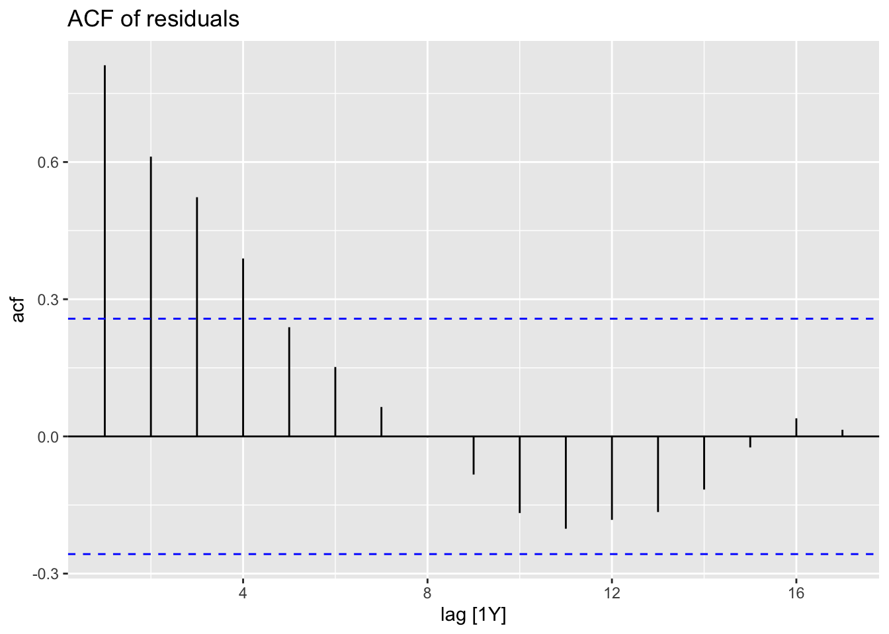
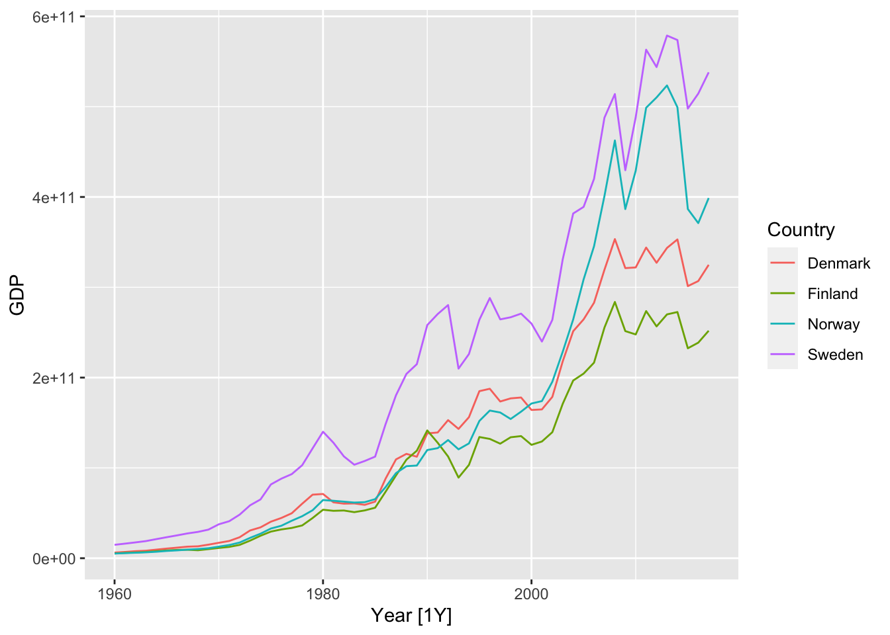

Chapter 16 Time series decomposition
Readings: FPP3, Sections 3.1, 3.2
16.0.1 Example: Gross Domestic Product data
library(tsibbledata) # Data sets package
print(global_economy)## # A tsibble: 15,150 x 9 [1Y]
## # Key: Country [263]
## Country Code Year GDP Growth CPI Imports Exports Population
## <fct> <fct> <dbl> <dbl> <dbl> <dbl> <dbl> <dbl> <dbl>
## 1 Afghanistan AFG 1960 537777811. NA NA 7.02 4.13 8996351
## 2 Afghanistan AFG 1961 548888896. NA NA 8.10 4.45 9166764
## 3 Afghanistan AFG 1962 546666678. NA NA 9.35 4.88 9345868
## 4 Afghanistan AFG 1963 751111191. NA NA 16.9 9.17 9533954
## 5 Afghanistan AFG 1964 800000044. NA NA 18.1 8.89 9731361
## 6 Afghanistan AFG 1965 1006666638. NA NA 21.4 11.3 9938414
## 7 Afghanistan AFG 1966 1399999967. NA NA 18.6 8.57 10152331
## 8 Afghanistan AFG 1967 1673333418. NA NA 14.2 6.77 10372630
## 9 Afghanistan AFG 1968 1373333367. NA NA 15.2 8.90 10604346
## 10 Afghanistan AFG 1969 1408888922. NA NA 15.0 10.1 10854428
## # … with 15,140 more rowsglobal_economy %>% filter(Country=="Sweden") %>% print()## # A tsibble: 58 x 9 [1Y]
## # Key: Country [1]
## Country Code Year GDP Growth CPI Imports Exports Population
## <fct> <fct> <dbl> <dbl> <dbl> <dbl> <dbl> <dbl> <dbl>
## 1 Sweden SWE 1960 14842870293. NA 9.21 23.4 23.0 7484656
## 2 Sweden SWE 1961 16147160123. 5.68 9.41 21.7 22.3 7519998
## 3 Sweden SWE 1962 17511477311. 4.26 9.86 21.4 21.9 7561588
## 4 Sweden SWE 1963 18954132366. 5.33 10.1 21.5 21.9 7604328
## 5 Sweden SWE 1964 21137242561. 6.82 10.5 21.9 22.3 7661354
## 6 Sweden SWE 1965 23260320646. 3.82 11.0 22.5 21.9 7733853
## 7 Sweden SWE 1966 25302033132. 2.09 11.7 21.9 21.4 7807797
## 8 Sweden SWE 1967 27463409202. 3.37 12.2 21.0 21.1 7867931
## 9 Sweden SWE 1968 29143383491. 3.64 12.5 21.6 21.6 7912273
## 10 Sweden SWE 1969 31649203886. 5.01 12.8 23.0 22.8 7968072
## # … with 48 more rowsglobal_economy %>%
filter(Country=="Sweden") %>%
autoplot(GDP) +
ggtitle("GDP for Sweden") + ylab("$US billions")16.0.2 Fitting data to simple models
global_economy %>% model(trend_model = TSLM(GDP ~ trend())) -> fit
fit## # A mable: 263 x 2
## # Key: Country [263]
## Country trend_model
## <fct> <model>
## 1 Afghanistan <TSLM>
## 2 Albania <TSLM>
## 3 Algeria <TSLM>
## 4 American Samoa <TSLM>
## 5 Andorra <TSLM>
## 6 Angola <TSLM>
## 7 Antigua and Barbuda <TSLM>
## 8 Arab World <TSLM>
## 9 Argentina <TSLM>
## 10 Armenia <TSLM>
## # … with 253 more rowsfit %>% filter(Country == "Sweden") %>% residuals()## # A tsibble: 58 x 4 [1Y]
## # Key: Country, .model [1]
## Country .model Year .resid
## <fct> <chr> <dbl> <dbl>
## 1 Sweden trend_model 1960 79973991821.
## 2 Sweden trend_model 1961 71110300270.
## 3 Sweden trend_model 1962 62306636078.
## 4 Sweden trend_model 1963 53581309752.
## 5 Sweden trend_model 1964 45596438566.
## 6 Sweden trend_model 1965 37551535271.
## 7 Sweden trend_model 1966 29425266377.
## 8 Sweden trend_model 1967 21418661066.
## 9 Sweden trend_model 1968 12930653974.
## 10 Sweden trend_model 1969 5268492989.
## # … with 48 more rowsfit %>% filter(Country == "Sweden") %>% residuals() %>% autoplot(.resid)16.0.3 Work with ln(GDP)
global_economy %>%
filter(Country=="Sweden") %>%
autoplot(log(GDP)) +
ggtitle("ln(GDP) for Sweden") + ylab("$US billions")
global_economy %>%
model(trend_model = TSLM(log(GDP) ~ trend())) -> logfitlogfit %>% filter(Country == "Sweden") %>% residuals() %>% autoplot()
global_economy %>% model(trend_model = TSLM(log(GDP) ~ log(Population))) -> fit3
fit3 %>% filter(Country == "Sweden") %>% residuals() %>% autoplot()
16.1 Producing forecasts
fit %>% forecast(h = "3 years") -> fcast3yrs
fcast3yrs## # A fable: 789 x 5 [1Y]
## # Key: Country, .model [263]
## Country .model Year GDP .mean
## <fct> <chr> <dbl> <dist> <dbl>
## 1 Afghanistan trend_model 2018 N(1.6e+10, 1.3e+19) 16205101654.
## 2 Afghanistan trend_model 2019 N(1.7e+10, 1.3e+19) 16511878141.
## 3 Afghanistan trend_model 2020 N(1.7e+10, 1.3e+19) 16818654627.
## 4 Albania trend_model 2018 N(1.4e+10, 3.9e+18) 13733734164.
## 5 Albania trend_model 2019 N(1.4e+10, 3.9e+18) 14166852711.
## 6 Albania trend_model 2020 N(1.5e+10, 3.9e+18) 14599971258.
## 7 Algeria trend_model 2018 N(1.6e+11, 9.4e+20) 157895153441.
## 8 Algeria trend_model 2019 N(1.6e+11, 9.4e+20) 161100952126.
## 9 Algeria trend_model 2020 N(1.6e+11, 9.4e+20) 164306750811.
## 10 American Samoa trend_model 2018 N(6.8e+08, 1.7e+15) 682475000
## # … with 779 more rowsfcast3yrs %>% filter(Country == "Sweden", Year == 2020) %>% str()## fbl_ts [1 × 5] (S3: fbl_ts/tbl_ts/tbl_df/tbl/data.frame)
## $ Country: Factor w/ 263 levels "Afghanistan",..: 232
## $ .model : chr "trend_model"
## $ Year : num 2020
## $ GDP : dist [1:1]
## ..$ 3:List of 2
## .. ..$ mu : num 5.45e+11
## .. ..$ sigma: num 5.34e+10
## .. ..- attr(*, "class")= chr [1:2] "dist_normal" "dist_default"
## ..@ vars: chr "GDP"
## $ .mean : num 5.45e+11
## - attr(*, "key")= tibble [1 × 3] (S3: tbl_df/tbl/data.frame)
## ..$ Country: Factor w/ 263 levels "Afghanistan",..: 232
## ..$ .model : chr "trend_model"
## ..$ .rows : list<int> [1:1]
## .. ..$ : int 1
## .. ..@ ptype: int(0)
## ..- attr(*, ".drop")= logi TRUE
## - attr(*, "index")= chr "Year"
## ..- attr(*, "ordered")= logi TRUE
## - attr(*, "index2")= chr "Year"
## - attr(*, "interval")= interval [1:1] 1Y
## ..@ .regular: logi TRUE
## - attr(*, "response")= chr "GDP"
## - attr(*, "dist")= chr "GDP"
## - attr(*, "model_cn")= chr ".model"fcast3yrs %>%
filter(Country=="Sweden") %>%
autoplot(global_economy) +
ggtitle("GDP for Sweden") + ylab("$US billions")
16.1.1 Model residuals vs. forecast errors
Model residuals:
Your data: \(y_1, y_2, \ldots, y_T\)
Fitted values: \(\hat{y}_1, \hat{y}_2, \ldots, \hat{y}_T\)
Model residuals: \(e_t = y_t - \hat{y}_t\)
Forecast errors:
augment(fit)## # A tsibble: 15,150 x 7 [1Y]
## # Key: Country, .model [263]
## Country .model Year GDP .fitted .resid .innov
## <fct> <chr> <dbl> <dbl> <dbl> <dbl> <dbl>
## 1 Afghanistan trend_model 1960 537777811. -1587934559. 2125712370. 2.13e9
## 2 Afghanistan trend_model 1961 548888896. -1281158073. 1830046968. 1.83e9
## 3 Afghanistan trend_model 1962 546666678. -974381586. 1521048264. 1.52e9
## 4 Afghanistan trend_model 1963 751111191. -667605100. 1418716291. 1.42e9
## 5 Afghanistan trend_model 1964 800000044. -360828613. 1160828658. 1.16e9
## 6 Afghanistan trend_model 1965 1006666638. -54052127. 1060718765. 1.06e9
## 7 Afghanistan trend_model 1966 1399999967. 252724359. 1147275607. 1.15e9
## 8 Afghanistan trend_model 1967 1673333418. 559500846. 1113832572. 1.11e9
## 9 Afghanistan trend_model 1968 1373333367. 866277332. 507056034. 5.07e8
## 10 Afghanistan trend_model 1969 1408888922. 1173053819. 235835103. 2.36e8
## # … with 15,140 more rowsaugment(fit) %>% filter(Country == "Sweden") %>%
ggplot(aes(x = .resid)) +
geom_histogram(bins = 20) +
ggtitle("Histogram of residuals")
16.1.2 Are the model residuals auto-correlated?
augment(fit) %>% filter(Country == "Sweden") -> augSweden
augSweden %>%
ACF(.resid) %>%
autoplot() + ggtitle("ACF of residuals")
augment(fit3) %>% filter(Country == "Sweden") -> augSweden3
augSweden3 %>%
ACF(.resid) %>%
autoplot() + ggtitle("ACF of residuals")
16.2 Example: GDP, several countries
library(tsibbledata) # Data sets package
nordic <- c("Sweden", "Denmark", "Norway", "Finland")
(global_economy %>% filter(Country %in% nordic) -> nordic_economy)## # A tsibble: 232 x 9 [1Y]
## # Key: Country [4]
## Country Code Year GDP Growth CPI Imports Exports Population
## <fct> <fct> <dbl> <dbl> <dbl> <dbl> <dbl> <dbl> <dbl>
## 1 Denmark DNK 1960 6248946880. NA 8.25 34.3 32.3 4579603
## 2 Denmark DNK 1961 6933842099. 6.38 8.53 32.3 30.0 4611687
## 3 Denmark DNK 1962 7812968114. 5.67 9.16 32.5 28.6 4647727
## 4 Denmark DNK 1963 8316692386. 0.637 9.72 30.8 30.4 4684483
## 5 Denmark DNK 1964 9506678763. 9.27 10.0 32.6 29.9 4722072
## 6 Denmark DNK 1965 10678897387. 4.56 10.6 31.5 29.3 4759012
## 7 Denmark DNK 1966 11721248101. 2.74 11.3 30.8 28.6 4797381
## 8 Denmark DNK 1967 12788479692. 3.42 12.2 30.0 27.3 4835354
## 9 Denmark DNK 1968 13196541952 3.97 13.2 29.7 27.7 4864883
## 10 Denmark DNK 1969 15009384585. 6.32 13.7 30.4 27.6 4891860
## # … with 222 more rowsnordic_economy %>% autoplot(GDP)
fitnord <- nordic_economy %>%
model(
trend_model = TSLM(GDP ~ trend()),
trend_model_ln = TSLM(log(GDP) ~ trend()),
ets = ETS(GDP ~ trend("A")),
arima = ARIMA(GDP)
)
fitnord## # A mable: 4 x 5
## # Key: Country [4]
## Country trend_model trend_model_ln ets arima
## <fct> <model> <model> <model> <model>
## 1 Denmark <TSLM> <TSLM> <ETS(M,A,N)> <ARIMA(1,1,1)>
## 2 Finland <TSLM> <TSLM> <ETS(M,A,N)> <ARIMA(0,1,2)>
## 3 Norway <TSLM> <TSLM> <ETS(M,A,N)> <ARIMA(0,1,1)>
## 4 Sweden <TSLM> <TSLM> <ETS(M,A,N)> <ARIMA(0,1,2)>fitnord %>%
dplyr::select(arima) %>%
coef()## # A tibble: 7 × 7
## Country .model term estimate std.error statistic p.value
## <fct> <chr> <chr> <dbl> <dbl> <dbl> <dbl>
## 1 Denmark arima ar1 -0.390 0.206 -1.89 0.0636
## 2 Denmark arima ma1 0.724 0.143 5.05 0.00000484
## 3 Finland arima ma1 0.406 0.120 3.39 0.00126
## 4 Finland arima ma2 -0.221 0.108 -2.05 0.0450
## 5 Norway arima ma1 0.410 0.155 2.65 0.0104
## 6 Sweden arima ma1 0.241 0.121 1.99 0.0510
## 7 Sweden arima ma2 -0.188 0.101 -1.87 0.0670Denmark: ARMA(1,1)
Finland: MA(2)
Norway: MA(1)
Sweden: MA(2)
nordic_economy %>%
model(arima_constrained = ARIMA(GDP ~ pdq(1,0,2))) %>% dplyr::select(arima_constrained) %>% coef()## # A tibble: 0 × 4
## # … with 4 variables: Country <fct>, .model <chr>, term <chr>, estimate <dbl>fitnord %>% coef()## # A tibble: 39 × 7
## Country .model term estimate std.error statistic p.value
## <fct> <chr> <chr> <dbl> <dbl> <dbl> <dbl>
## 1 Denmark trend_model (Intercept) -5.65e+10 8.75e+9 -6.46 2.70e- 8
## 2 Denmark trend_model trend() 6.63e+ 9 2.58e+8 25.7 1.14e-32
## 3 Denmark trend_model_ln (Intercept) 2.30e+ 1 8.55e-2 269. 7.68e-89
## 4 Denmark trend_model_ln trend() 7.12e- 2 2.52e-3 28.3 7.68e-35
## 5 Denmark ets alpha 1.00e+ 0 NA NA NA
## 6 Denmark ets beta 3.67e- 1 NA NA NA
## 7 Denmark ets l[0] 4.92e+ 9 NA NA NA
## 8 Denmark ets b[0] 1.24e+ 9 NA NA NA
## 9 Denmark arima ar1 -3.90e- 1 2.06e-1 -1.89 6.36e- 2
## 10 Denmark arima ma1 7.24e- 1 1.43e-1 5.05 4.84e- 6
## # … with 29 more rowsfitnord %>% glance() ## # A tibble: 16 × 21
## Country .model r_squared adj_r_squared sigma2 statistic p_value df
## <fct> <chr> <dbl> <dbl> <dbl> <dbl> <dbl> <int>
## 1 Denmark trend_mod… 0.922 0.920 1.08e+21 660. 1.14e-32 2
## 2 Denmark trend_mod… 0.935 0.933 1.03e- 1 800. 7.68e-35 2
## 3 Denmark ets NA NA 1.04e- 2 NA NA NA
## 4 Denmark arima NA NA 2.41e+20 NA NA NA
## 5 Finland trend_mod… 0.914 0.912 7.34e+20 594. 1.70e-31 2
## 6 Finland trend_mod… 0.930 0.929 1.14e- 1 745. 4.96e-34 2
## 7 Finland ets NA NA 1.32e- 2 NA NA NA
## 8 Finland arima NA NA 1.89e+20 NA NA NA
## 9 Norway trend_mod… 0.824 0.821 4.60e+21 262. 8.54e-23 2
## 10 Norway trend_mod… 0.959 0.958 8.37e- 2 1307. 1.64e-40 2
## 11 Norway ets NA NA 8.23e- 3 NA NA NA
## 12 Norway arima NA NA 6.78e+20 NA NA NA
## 13 Sweden trend_mod… 0.919 0.918 2.65e+21 635. 3.07e-32 2
## 14 Sweden trend_mod… 0.935 0.933 8.19e- 2 800. 7.57e-35 2
## 15 Sweden ets NA NA 1.16e- 2 NA NA NA
## 16 Sweden arima NA NA 8.84e+20 NA NA NA
## # … with 13 more variables: log_lik <dbl>, AIC <dbl>, AICc <dbl>, BIC <dbl>,
## # CV <dbl>, deviance <dbl>, df.residual <int>, rank <int>, MSE <dbl>,
## # AMSE <dbl>, MAE <dbl>, ar_roots <list>, ma_roots <list>fitnord %>% filter(Country == "Denmark") %>% dplyr::select(arima) %>% report()## Series: GDP
## Model: ARIMA(1,1,1)
##
## Coefficients:
## ar1 ma1
## -0.3898 0.7240
## s.e. 0.2061 0.1434
##
## sigma^2 estimated as 2.407e+20: log likelihood=-1417.5
## AIC=2840.99 AICc=2841.45 BIC=2847.12fitnord %>%
accuracy() %>%
arrange(Country, MPE)## # A tibble: 16 × 11
## Country .model .type ME RMSE MAE MPE MAPE MASE RMSSE
## <fct> <chr> <chr> <dbl> <dbl> <dbl> <dbl> <dbl> <dbl> <dbl>
## 1 Denmark trend_mod… Trai… -1.12e+10 6.89e10 3.67e10 -5.17 28.0 3.34 4.24
## 2 Denmark ets Trai… 4.50e+ 7 1.65e10 1.04e10 0.518 7.09 0.946 1.02
## 3 Denmark arima Trai… 4.40e+ 9 1.51e10 1.04e10 5.05 8.16 0.945 0.930
## 4 Denmark trend_mod… Trai… -2.06e- 6 3.23e10 2.63e10 51.1 80.8 2.40 1.99
## 5 Finland trend_mod… Trai… -8.61e+ 9 5.64e10 2.99e10 -5.53 28.6 2.95 3.82
## 6 Finland ets Trai… 1.36e+ 8 1.47e10 9.41e 9 0.795 8.36 0.927 0.996
## 7 Finland arima Trai… 3.54e+ 9 1.34e10 9.14e 9 5.03 8.92 0.900 0.906
## 8 Finland trend_mod… Trai… 9.54e- 7 2.66e10 2.21e10 46.1 80.5 2.18 1.80
## 9 Norway trend_mod… Trai… -1.31e+10 8.20e10 3.51e10 -4.24 24.9 2.24 3.01
## 10 Norway ets Trai… -5.29e+ 8 2.75e10 1.37e10 0.755 6.94 0.870 1.01
## 11 Norway arima Trai… 4.90e+ 9 2.56e10 1.40e10 5.04 8.11 0.890 0.938
## 12 Norway trend_mod… Trai… 2.09e- 6 6.67e10 5.48e10 130. 181. 3.49 2.45
## 13 Sweden trend_mod… Trai… -1.18e+10 8.23e10 4.79e10 -3.96 23.7 2.25 2.68
## 14 Sweden ets Trai… 1.19e+ 9 3.02e10 1.86e10 0.745 7.64 0.875 0.984
## 15 Sweden arima Trai… 8.48e+ 9 2.89e10 2.01e10 5.18 9.37 0.942 0.944
## 16 Sweden trend_mod… Trai… 2.10e- 6 5.05e10 3.90e10 29.4 53.3 1.83 1.65
## # … with 1 more variable: ACF1 <dbl># ETS forecasts
USAccDeaths %>%
ets() %>%
forecast() %>%
autoplot()str(taylor)
plot(taylor)16.2.1 Plot lagged values
vaelsales_tbl_ts %>% filter(month(Month) %in% c(3,6,9,12)) %>% gg_lag(sales_GWh, lags = 1:2)
vaelsales_tbl_ts %>% filter(month(Month) == 1) %>% gg_lag(sales_GWh, lags = 1:2)
vaelsales_tbl_ts %>% ACF(sales_GWh) %>% autoplot()
# decompose(vaelsales_tbl_ts)vaelsales_tbl_ts %>%
model(STL(sales_GWh ~ trend(window=21) + season(window='periodic'), robust = TRUE)) %>%
components() %>%
autoplot()
vaelsales_tbl_ts %>%
mutate(ln_sales_GWh = log(sales_GWh)) %>%
model(STL(ln_sales_GWh ~ trend(window=21) + season(window='periodic'),
robust = TRUE)) %>%
components() %>%
autoplot()
vaelsales_tbl_ts %>%
features(sales_GWh, feat_stl)## # A tibble: 1 × 9
## trend_strength seasonal_strength_… seasonal_peak_y… seasonal_trough… spikiness
## <dbl> <dbl> <dbl> <dbl> <dbl>
## 1 0.609 0.869 7 4 747395.
## # … with 4 more variables: linearity <dbl>, curvature <dbl>, stl_e_acf1 <dbl>,
## # stl_e_acf10 <dbl>vaelsales_tbl_ts %>%
features(sales_GWh, feature_set(pkgs="feasts"))## # A tibble: 1 × 47
## trend_strength seasonal_strength_… seasonal_peak_y… seasonal_trough… spikiness
## <dbl> <dbl> <dbl> <dbl> <dbl>
## 1 0.609 0.869 7 4 747395.
## # … with 42 more variables: linearity <dbl>, curvature <dbl>, stl_e_acf1 <dbl>,
## # stl_e_acf10 <dbl>, acf1 <dbl>, acf10 <dbl>, diff1_acf1 <dbl>,
## # diff1_acf10 <dbl>, diff2_acf1 <dbl>, diff2_acf10 <dbl>, season_acf1 <dbl>,
## # pacf5 <dbl>, diff1_pacf5 <dbl>, diff2_pacf5 <dbl>, season_pacf <dbl>,
## # zero_run_mean <dbl>, nonzero_squared_cv <dbl>, zero_start_prop <dbl>,
## # zero_end_prop <dbl>, lambda_guerrero <dbl>, kpss_stat <dbl>,
## # kpss_pvalue <dbl>, pp_stat <dbl>, pp_pvalue <dbl>, ndiffs <int>, …